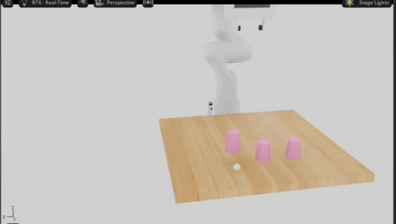

Reveal
The ball appears beside a cup—the memory cue.
ShellBench turns the classic shell game into a controlled robotics benchmark for measuring long-horizon memory—not just dexterity.

Once the ball is covered, every cup looks identical. The task becomes non-Markovian: the correct action depends on information that disappeared hundreds of frames ago. Short observation windows may learn how to lift a cup, but not which cup to lift.
The ball appears beside a cup—the memory cue.
The cup hides the ball and removes visual evidence.
Cups swap through a controlled sequence.
The policy selects and lifts the remembered cup.
Two camera views and robot state condition a denoising model that generates smooth action chunks. It replans effectively, but sees only a short recent window.
A recurrent state persists from reveal, through every shuffle, until action—carrying information that is no longer visible.
Did the policy choose the cup hiding the ball?
Did the robot successfully lift any cup?
Was the correct cup selected and lifted?
Decision accuracy corrected for random chance.
Early LSTM runs achieved perfect manipulation while repeatedly choosing one position. Action regression can average across valid trajectories and collapse to a positional preference.
ShellBench exposed this because DSR and MSR are independent. A cup-classification head now supervises the decision explicitly; validation is ongoing.
A non-Markovian manipulation benchmark with controllable difficulty.
A unified Isaac Sim and LeRobot pipeline for data, training, sweeps, and evaluation.
Metrics that disentangle memory decisions from manipulation skill.
Direct comparison of Diffusion Policy and episode-level LSTM memory.